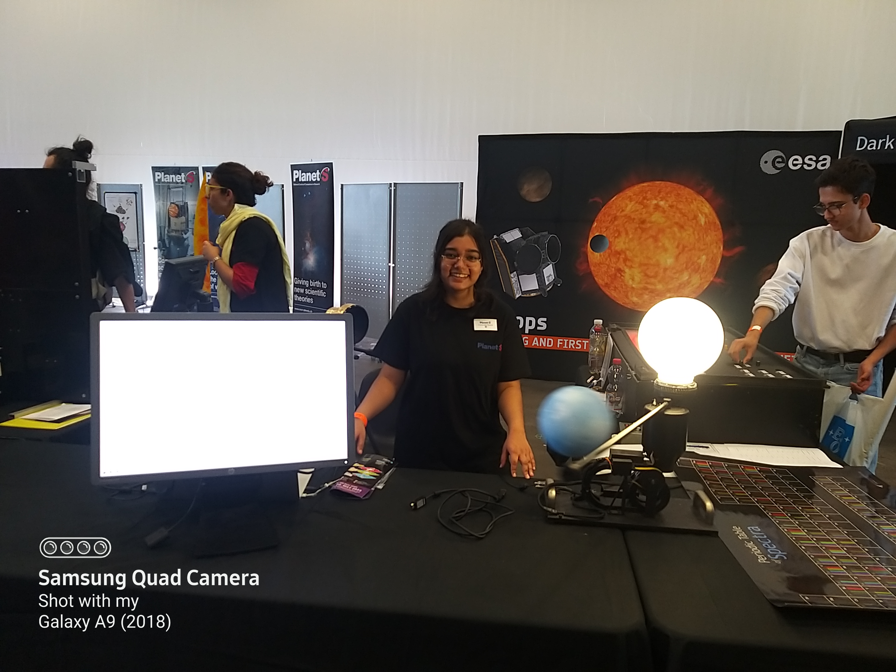
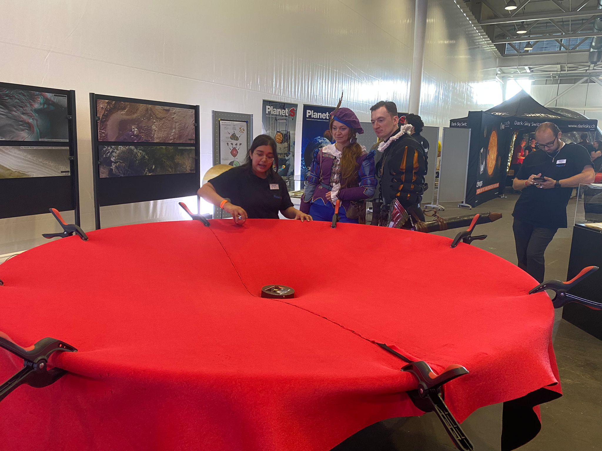
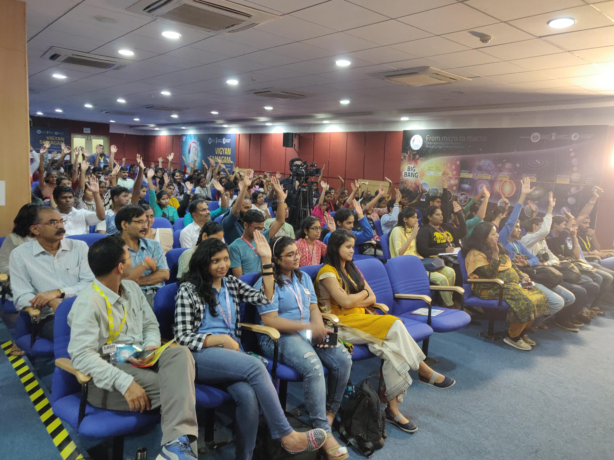
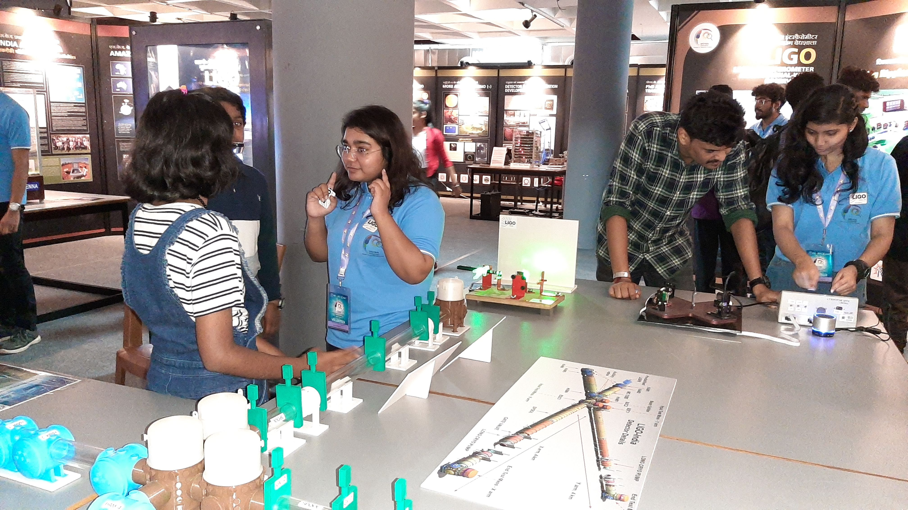
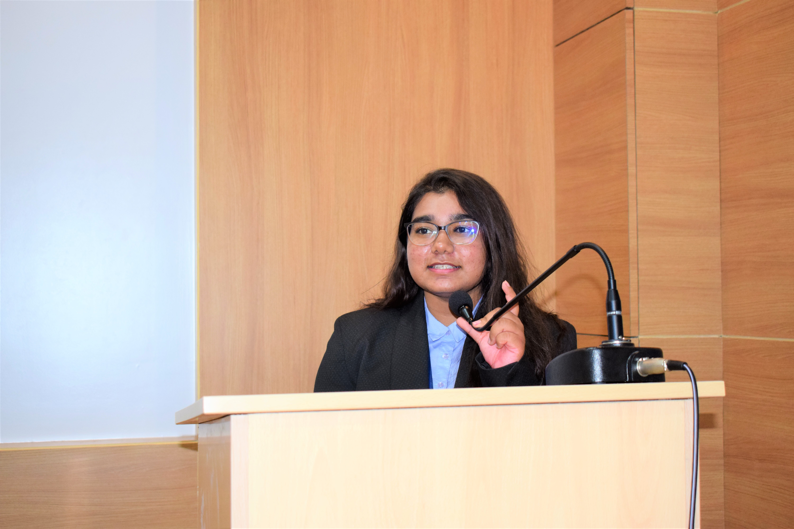
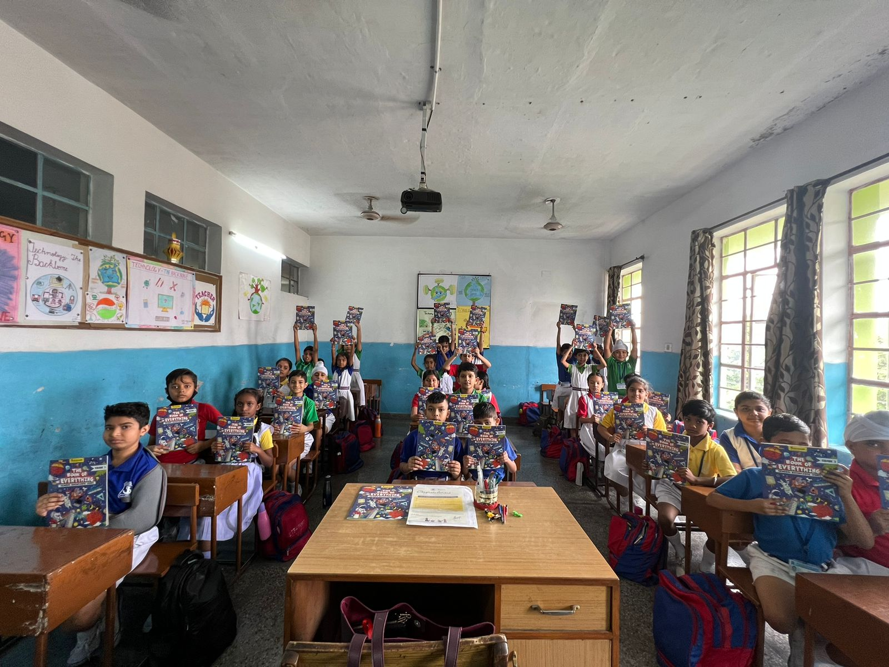
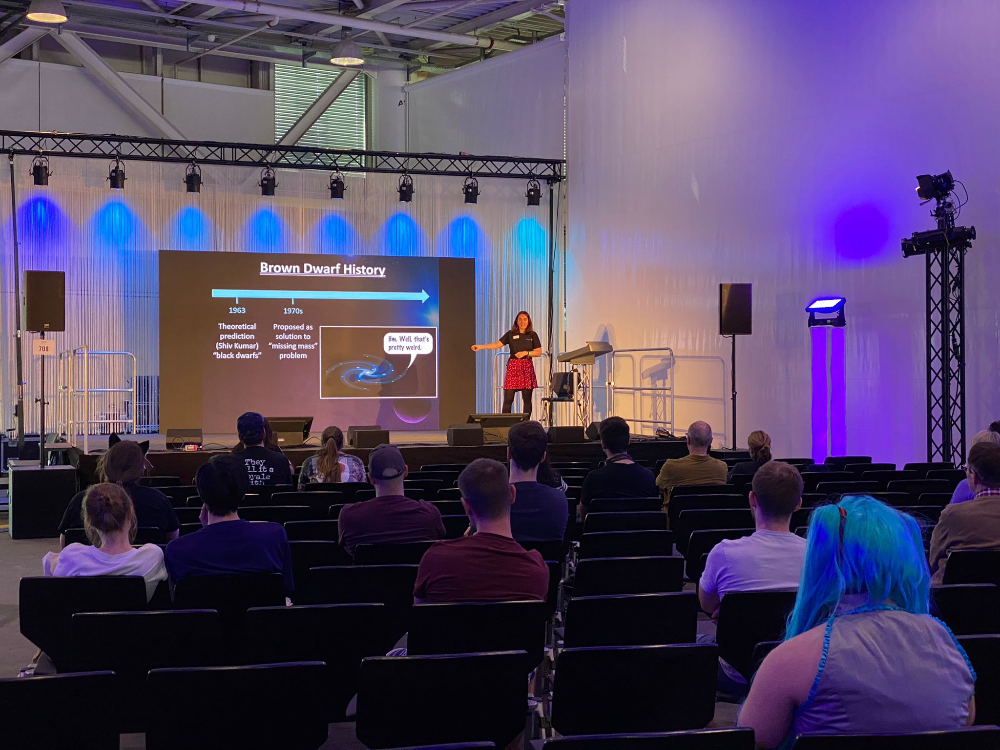

Science communication and other related activities because communication empowers us all.
Science Communication
- Content Coordinator, Space Scientist OlympiadThe Unscripted Life, Bombay, IndiaSeptember 2022 - PresentI co-design an elaborate learning program (along with curating its syllabus) for children enrolled in schools pan India. The program invites students to participate in several activities, provides them with credible, self-paced resources and ultimately culminates in a 'Space Scientist' Olympiad. The Olympiad tests the knowledge and skillset students developed throughout the program and rewards them for the effort put in. The purpose is to help build an interest in space, astronomy and astrophysics. At the end of the program, all participants leave with more knowledge and experience, with sufficient resources to sustain self-learning. All winners get more opportunities and mentorship to motivate them early-on towards pursuing careers in space.
- Volunteer for the “Space Village”, Swiss ComicCon 2022National Centre of Competence in Research PlanetS (NCCR PlanetS), Basel, SwitzerlandMay 2022Fantasy Basel, the Swiss ComicCon, is an established event aimed at a broad audience, spread over 70,000m2 of exhibitions. As a volunteer for PlanetS, I was responsible for surprising the audience with science and show them how exciting research is in reality by means of several exhibits on planetary science and astronomy.
- Mediator for the virtual science exhibition season “PSYCHE”Science Gallery Bengaluru (SGB), Bengaluru, IndiaJanuary 2022Communicated about neuroscience using exhibits to explore interesting and thought-provoking ideas with visitors.Click here to visit the PSYCHE archive.
- Guest Writer, The Secrets of the UniverseThe Secrets of the Universe – digital platform for astronomy-based science communication with 1M+ followersAugust 2021Click here to read the article.
- Mediator for the virtual science exhibition “Cosmiczoom”International Centre for Theoretical Sciences (ICTS), Tata Institute of Fundamental Research (TIFR)April 2021Took visitors on a journey at different scales of the universe to explore interesting and thought-provoking ideas.Click here to visit the Cosmiczoom website.
- Volunteer for LIGO-INDIA, Vigyaan SamagramDepartment of Atomic Energy, Department of Science and Technology, National Council of Science MuseumsSeptember 2019‘Vigyan Samagam’ brought together the world’s major Mega Science projects and was India’s first-ever, global Mega-Science exhibition. As a volunteer for Laser Interferometer Gravitational Wave Observatories (LIGO), I curated events, talks and demonstrations on gravitational wave astronomy at Visvesvaraya Industrial and Technological Museum, Bengaluru.
- Event Organizer: Seminars, workshops and lectures on Astronomy and AerospaceR.V. College of Engineering, Bengaluru, IndiaAugust 2016-June 2020
Interviews
- Interviewed for a planetary exploration documentary titled ‘Home’By Amogh George, Journalist, The Daily Mail UKMarch 2021Click here to watch, contact me or Amogh for the unabridged version :).
- Interviewed for article on microgravity experimentsTheSoftCopy, Indian Institute of Journalism and New Media (IIJNM)November 2019Click here to read.
Gallery
Don't miss seeing one of 2019's Physics Nobel Lauretes in classic Comic-Con make-up;)











